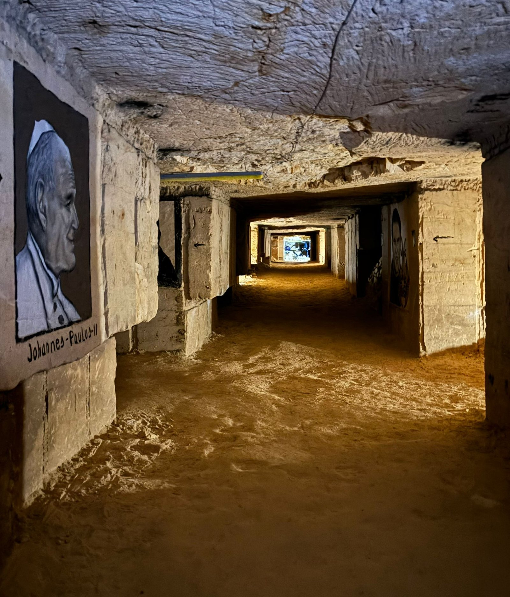
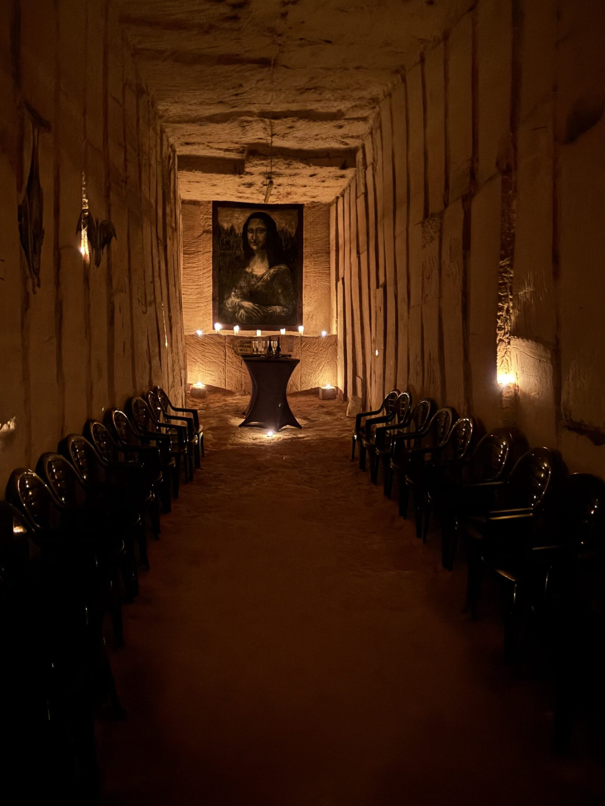

De rondleiding
Met een gids langs de mooiste gangen, tekeningen en verhalen.

Kilometers eeuwenoude mergelgangen, uitgehouwen door de boeren van Zichen. Een gids neemt u mee langs tekeningen, verhalen en plekken waar de zon altijd schijnt: ondergronds.
“We wisten niet wat ons te wachten stond, maar stonden met onze mond vol tanden vanaf dat we naar beneden wandelden.”
Keennan D.Mergel was de bouwsteen van het dorp. Generaties lang hakten de inwoners van Zichen hun eigen gangen uit, tot al die kleine groeven aaneengroeiden tot één ondergronds netwerk. Tijdens de rondleiding wandelt u letterlijk onder de huizen en erven van het dorp.

Met een gids langs de mooiste gangen, tekeningen en verhalen.
Geen weerbericht nodig. Ideaal voor scholen, verenigingen en teams.
Een lange tafel bij kaarslicht, voor wie het bijzonder wil.